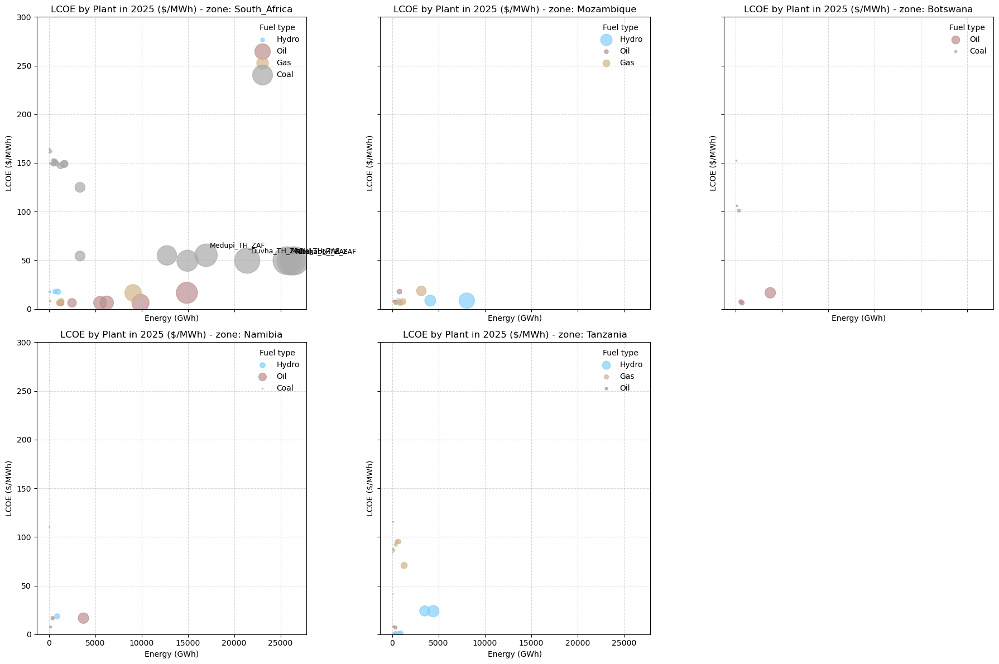
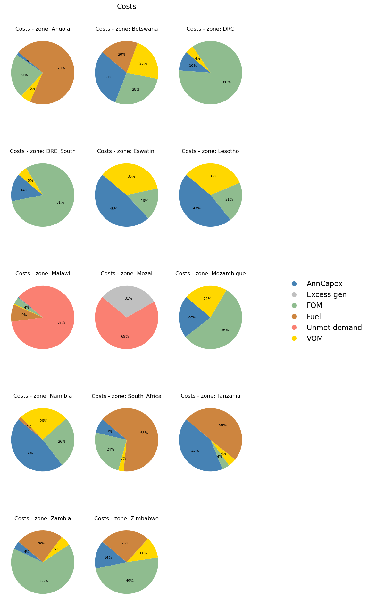
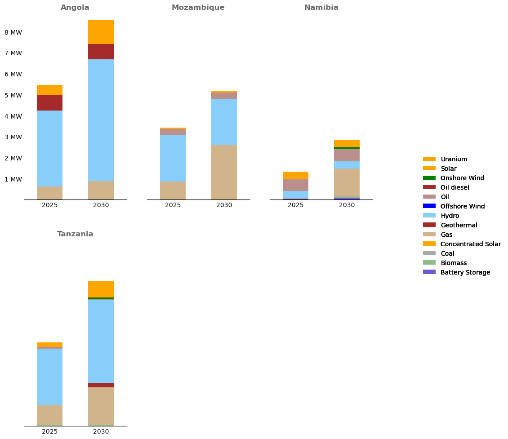
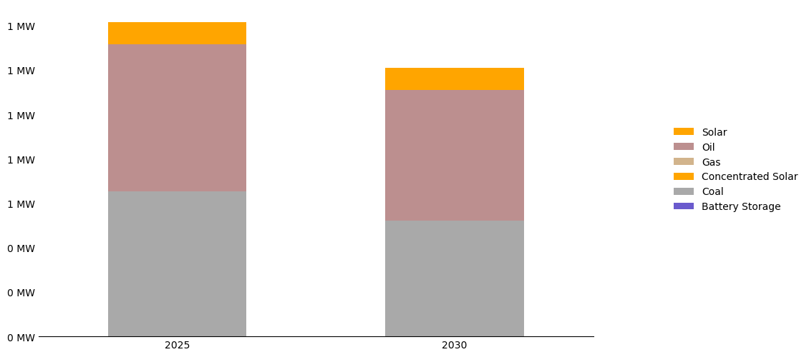

SAPP analysis#
Disclaimer: notebook in progress, only to illustrate new graphs with regional model !
from utils import *
RESULTS_FOLDER = 'simulations_run_20250120_165705' # Name of the folder containing the results
DISPLAY = True # Usually set to False to avoid displaying the graphs
# Rename scenarios for better visualization
SCENARIOS_RENAME = {
'simulation_baseline': 'Baseline',
}
EPM_TO_GEOJSON = {
'South Africa': 'South_Africa',
'Namibia': 'Namibia',
'Mozambique': 'Mozambique',
'United Republic of Tanzania': 'Tanzania',
'Angola': 'Angola',
'Botswana': 'Botswana',
'Zambia': 'Zambia',
'Malawi': 'Malawi',
'Lesotho': 'Lesotho',
'Zimbabwe': 'Zimbabwe',
'Democratic Republic of the Congo': 'DRC',
}
DISCOUNT_RATE = 0.06
SELECT_XAXIS = [2035, 2050] # x-axis displayed range for the graphs
selected_scenario = 'Baseline'
scenario_order = ['Baseline']
Read input and output data#
# Create the folder path
RESULTS_FOLDER = os.path.join('..', 'output', RESULTS_FOLDER)
GRAPHS_RESULTS = 'img'
GRAPHS_RESULTS = os.path.join(RESULTS_FOLDER, GRAPHS_RESULTS)
if not os.path.exists(GRAPHS_RESULTS):
os.makedirs(GRAPHS_RESULTS)
print(f'Created folder {GRAPHS_RESULTS}')
# Read the plot specifications
dict_specs = read_plot_specs()
# Extract and process EPM inputs
epm_input = extract_epm_folder(RESULTS_FOLDER, file='WB_EPM_SAPP.gdx')
epm_input = process_epm_inputs(epm_input, dict_specs, scenarios_rename=SCENARIOS_RENAME)
mapping_gen_fuel = epm_input['pGenDataExcel'].loc[:, ['scenario', 'generator', 'fuel1']]
# Extract and process EPM results
epm_results = extract_epm_folder(RESULTS_FOLDER, file='epmresults.gdx')
epm_results = process_epm_results(epm_results, dict_specs, scenarios_rename=SCENARIOS_RENAME,
mapping_gen_fuel=mapping_gen_fuel)
# Add plant colors to the dictionary
if True:
temp = epm_results['pEnergyByPlant'].copy()
plant_fuel_pairs = temp[['generator', 'fuel1']].drop_duplicates()
plant_fuel_pairs['colors'] = plant_fuel_pairs['fuel1'].map(dict_specs['colors'])
plant_to_color = dict(zip(plant_fuel_pairs['generator'], plant_fuel_pairs['colors']))
dict_specs['colors'].update(plant_to_color)
pFuelDispatch not found in epm_dict
pPlantFuelDispatch not found in epm_dict
/Users/celia/Documents/WorldBank/Energy_planning/EPM/epm/postprocessing/utils.py:201: FutureWarning: The behavior of Series.replace (and DataFrame.replace) with CategoricalDtype is deprecated. In a future version, replace will only be used for cases that preserve the categories. To change the categories, use ser.cat.rename_categories instead.
mapping_tech.replace(dict_specs['tech_mapping'], inplace=True)
Figures#
LCOE#
Displaying the LCOE of different plants for a subset of countries in the region
scenario, year = 'Baseline', 2025
x_column = 'Energy (GWh)'
y_column = 'LCOE ($/MWh)'
df = epm_results['pPlantAnnualLCOE'].copy()
df = df.rename(columns={'value': y_column})
df1 = epm_results['pEnergyByPlant'].copy()
df1 = df1.rename(columns={'value': x_column})
df = df.merge(df1, on=['scenario', 'zone', 'generator', 'year', 'fuel1'])
color_col = 'fuel1'
years = SELECT_XAXIS
temp = df[df['year'] == year]
temp = temp[temp['scenario'] == scenario]
# only if energy is positive
temp = temp[temp[x_column] > 1]
temp = temp[temp[color_col].isin(['Hydro', 'Oil', 'Coal', 'Gas'])]
# temp = temp.loc[temp.zone == 'South_Africa']
temp = temp.loc[temp.zone.isin(['South_Africa', 'Mozambique', 'Namibia', 'Tanzania', 'Botswana'])]
filename = None # Only for display in the notebook
subplot_scatter(temp, x_column, y_column, color_col, dict_specs['colors'],
ymax=300, title='LCOE by Plant in {} ($/MWh)'.format(year), legend='Fuel type',
filename=filename, xmax=None, size_scale=0.05, annotate_thresh=15000,
subplot_column='zone', figsize=(6,6)
)

Costs#
scenario, year = 'Baseline', 2025
selected_costs = ['Annualized capex: $m',
'Fixed O&M: $m',
'Variable O&M: $m',
'Total fuel Costs: $m',
'Transmission additions: $m',
'Unmet demand costs: $m',
'Excess generation: $m']
selected_names = ['AnnCapex', 'FOM', 'VOM', 'Fuel', 'Transmissions', 'Unmet demand', 'Excess gen', 'VRE curtail', 'Import', 'Export', 'Spinning reserve']
name_mapping = dict(zip(selected_costs, selected_names))
df = epm_results['pCostSummary'].copy()
df = df.loc[(df['year'] == year) & (df['scenario'] == scenario)]
df = df[df.attribute.isin(selected_costs)]
subplot_pie_new(df, index='attribute', dict_colors=dict_specs['colors'], subplot_column='zone', title='Costs', figsize=(8,4),
percent_cap=1, filename=None, rename=name_mapping,
bbox_to_anchor=(1.1, 0.5), loc='center left'
)

Maps#
zone_map, centers = create_zonemap(dict_specs['map_countries'], selected_countries=list(EPM_TO_GEOJSON.keys()), map_epm_to_geojson=EPM_TO_GEOJSON)
pCapacityByFuel = epm_results['pCapacityByFuel'].copy()
pCapacityByFuel = pCapacityByFuel.loc[pCapacityByFuel.zone.isin(list(EPM_TO_GEOJSON.values()))]
make_capacity_mix_map(zone_map, pCapacityByFuel, dict_specs['colors'], centers, year=2025, region='SAPP', scenario='Baseline', filename=None,
map_epm_to_geojson=EPM_TO_GEOJSON, figsize=(12,8), bbox_to_anchor=(0.7, 0.5), loc='center left',
pie_sizing=True, min_size=1.5, max_size=4)

Capacity evolution#
Displaying evolution of capacity across time for a subset of the countries
df = epm_results['pCapacityByFuel'].copy()
df['value'] = df['value'] / 1e3
filename = f'{GRAPHS_RESULTS}/CapacityMixClusteredStackedAreaPlot.png'
filename = None # Only for display in the notebook
make_stacked_bar_subplots(df, filename, dict_specs['colors'], column_stacked='fuel', column_xaxis='zone',
column_value='value', column_multiple_bars='year', select_xaxis=['Namibia', 'Tanzania', 'Angola', 'Mozambique'],
format_y=lambda y, _: '{:.0f} MW'.format(y), cap=800)

# zooming in on a specific country
make_stacked_bar_subplots(df, filename, dict_specs['colors'], column_stacked='fuel', column_xaxis=None,
column_value='value', column_multiple_bars='year', select_xaxis=None,
format_y=lambda y, _: '{:.0f} MW'.format(y), cap=20, selected_zone='Botswana')
